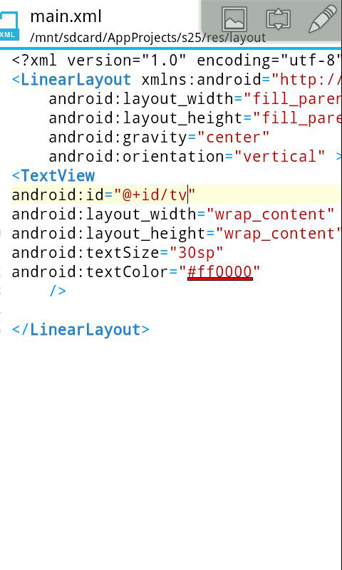
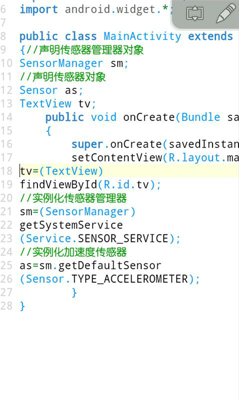
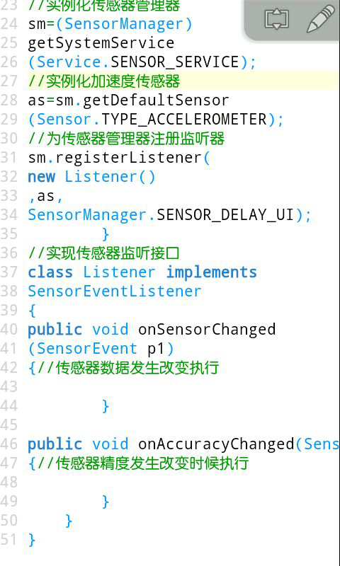
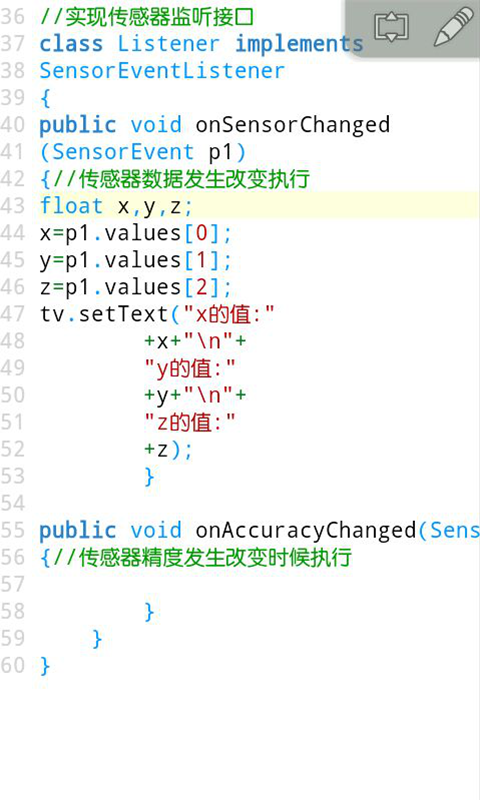
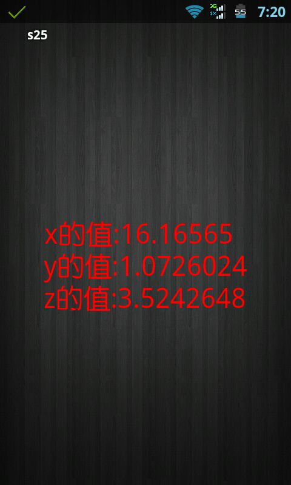
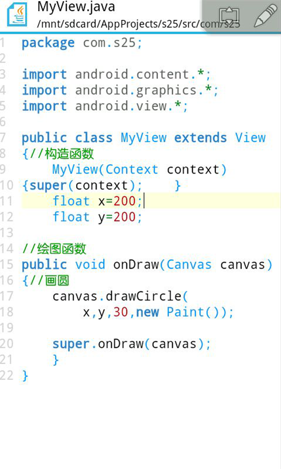
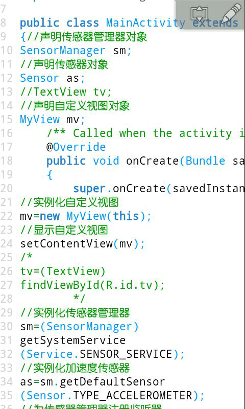
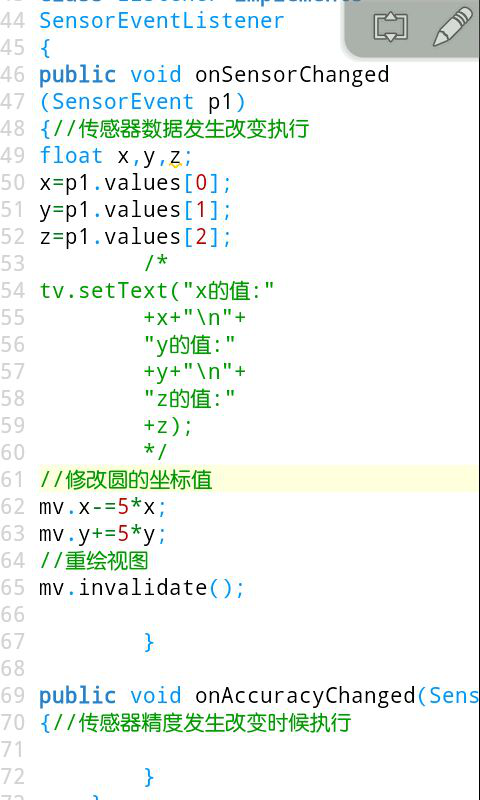
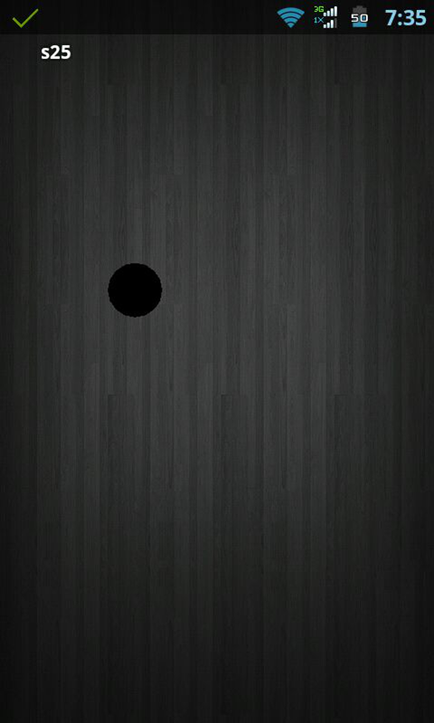

加速传感器介绍(25课)
手机中的传感器有很多种，比如温度传感器，光线传感器，距离传感器，磁场传感器，陀螺仪传感器，传感器的使用也都大同小异，这节课介绍一下加速传感器。
新建一个项目，打开我们布局文件定义一个TextView用来观察我们传感器的数据。

然后我们打开java代码，声明一个SensorManager传感器管理器的对象，然后再声明一个Sensor传感器对象，标签，实例化标签，再通过getSystemService
(Service.SENSOR_SERVICE)方法得到一个传感器管理器的对象，括号里面是传感器服务，通过sm.getDefaultSensor
(Sensor.TYPE_ACCELEROMETER)方法得到一个传感器对象，括号里面的参数是传感器的类型，这里的类型是加速度传感器，当然还有很多其他的传感器。比如TYPE_LIGHT是光线传感器。

然后我们定义一个内部类实现SensorEventListener传感器监听器接口，重写里面的抽象函数，然后我们通过registerListener()方法为传感器管理器注册监听器，里面3个参数，第一个是传感器监听器的对象，第2个是传感器的类型，我们是加速度传感器，第3个参数是一个整型，传感器的监听速率，单位是微秒，微秒是比毫秒更小的单位，一秒等于一百万微秒，这里是一个常量SensorManager.SENSOR_DELAY_UI适用于UI。数值越小灵敏度越高不过手机的功耗就会越大。我们也可以通过unregisterListener()取消监听器，里面有一个监听器对象的参数。

接下来看我们的监听器，我们看onSensorChanged方法，传感器数据发生变化时候会执行该方法，里面接受一个p1的参数，它有一个浮点型values的数组，我们声明3个浮点型变量x，y，z让它们分别等于里面的三个成员，然后显示在标签上面，\n是换行符。\r是空格符。

然后我们运行我们的程序，通过观察我们可以发现如果z大于0说明手机屏幕朝上，如果z小于0说明手机屏幕朝下，如果手机屏幕朝下我们可以温馨提示躺着玩手机对眼睛有害。如果x大于0说明手机往左倾斜，如果x小于0说明手机往右倾斜。如果y大于0说明手机往下倾斜，如果y小于0说明手机往上倾斜。这里需要注意手机的坐标系不会改变的，如果我们横过来，手机往左倾斜则y大于0。我们可以试着把传感器类型改成光线传感器，那么x就代表光线的强度，光线越强，x的值就会越大。

这里再介绍一下View，我们来完成一个小例子，在屏幕上画一个圆跟随手机的传感器进行运动。我们新建一个类叫做MyView，继承View，写上构造函数，然后写上onDraw绘图函数，里面有一个画布参数，我们可以在自己绘制内容，drawCircle是在屏幕上画圆，里面4个参数，前面两个是圆心的x和y坐标，第3个参数是圆的半径，第4个参数是一个笔刷实例，我们声明两个浮点型的变量作为圆心坐标。

然后继续打开我们的Activity代码，声明一个自定义视图对象，进行实例化，显示我们的自定义视图，把有关标签的代码都进行注释掉。

然后看我们监听器代码，mv.x-=5*x;就是mv.x=mv.x-5*x的缩写，我们改变圆的x和y坐标，然后使用invalidate()方法对视图进行重绘。

好了，接下来运行我们的项目，我们摇动我们的手机，上面的圆就会跟随我们的手机进行运动
